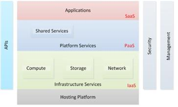

Welcome to Acloudysky Site
Introduction
This is an example of a static web site hosted on S3. Before we go any further let's give a brief contextual information. As you might know Amazon Simple Storage (S3) belongs to Infrastructure as a Service (IaaS) layer that is one of the main building blocks of the Cloud architecture as shown in the following logical diagram:
As you can see from the previous picture, the cloud architecture is structured in layers. Each layer abstracts the one below it and exposes interfaces that layers above can build upon. The layers are loosely coupled and provide horizontal scalability (they can expand) if needed. As you can see in the picture, the layers map to the various service models.Demo Objective
Without going into further details, which exceed the scope of this demo, let's see how easy it is to create a static w site on S3. Because S3 is an IaaS, it does not provide any Web server functionality like the one provided by the Apache server for Linux and the IIS server for Windows. All the Web functionality must be provided by the client (i.e., the browser). This is easily accomplished by modern browsers. The site demonstrates how to create the following:- Manual slide shows
- Automatic slide shows
- Playing stored videos
- Playing Youtube videos (AWS and Google?)
Please, see Creating and Testing the Site.
Also, run live examples.
You can download the the web site at: aws-s3-web-site.